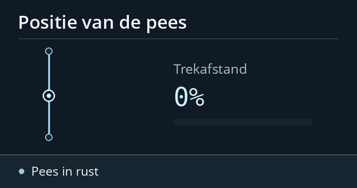
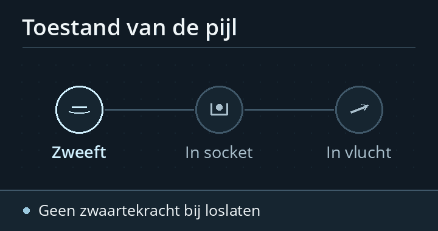
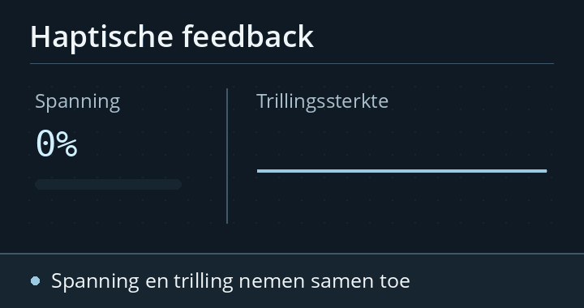
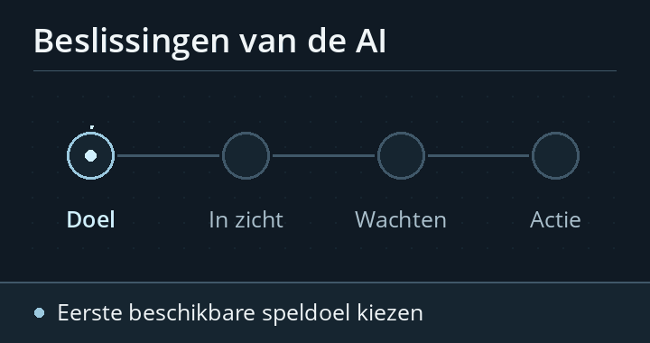
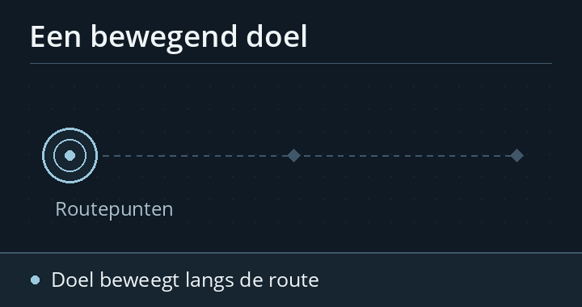
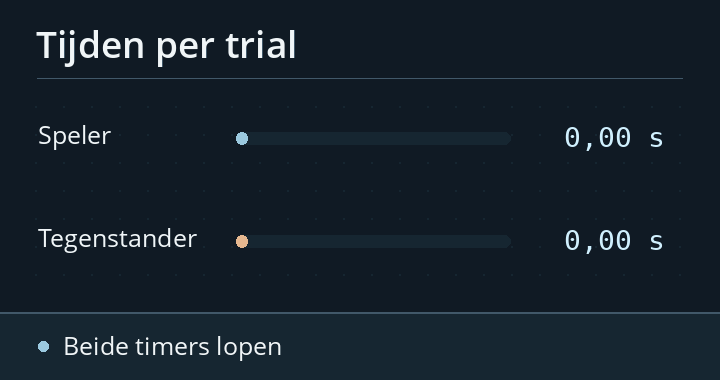

Mijn bijdrage.
De gameplay en systemen die ik voor Bow & Arrow Trials heb ontwikkeld.

Bow System
Voor Bow & Arrow Trials heb ik een interactief boogsysteem ontwikkeld waarbij de speler de boogpees met de VR-controller naar achteren kan trekken. Met een LineRenderer geef ik de boogpees weer aan de hand van drie punten. Terwijl de speler de pees uittrekt, beweegt het middelste punt mee met de positie van de hand. Met Vector3.Dot bereken ik de trekafstand in de juiste richting. Vervolgens gebruik ik Mathf.Clamp om de maximale trekafstand te beperken. De trekafstand wordt gebruikt om de schietsnelheid van de pijl te berekenen. Hoe verder de pees wordt uitgetrokken, hoe harder de pijl wordt afgeschoten. Wanneer de speler de pees loslaat, beweegt deze met Vector3.Lerp vloeiend terug naar de rustpositie.
Codefragmenten
BowString.cs — LineRenderer
void Awake()
{
line = GetComponent<LineRenderer>();
line.positionCount = 3;
line.useWorldSpace = true;
}
void LateUpdate()
{
line.SetPosition(0, end1.position);
line.SetPosition(1, grabPoint.position);
line.SetPosition(2, end2.position);
}BowStringPull.cs — Draw Distance
void Update()
{
if (isPulling && pullingHand != null)
{
Vector3 direction = pullDirection.forward;
Vector3 handOffset =
pullingHand.position - stringRestPoint.position;
float distance =
Vector3.Dot(handOffset, direction);
distance = Mathf.Clamp(
distance,
0f,
maxDrawDistance
);
stringGrabPoint.position =
stringRestPoint.position +
direction * distance;
}
else
{
stringGrabPoint.position = Vector3.Lerp(
stringGrabPoint.position,
stringRestPoint.position,
15f * Time.deltaTime
);
}
}BowShoot.cs — Draw Strength & Shooting
// Fragment uit Update()
float distance = Vector3.Distance(
stringRestPoint.position,
stringGrabPoint.position
);
drawAmount = Mathf.Clamp01(
distance / maxDrawDistance
);
if (drawAmount > storedDrawAmount)
{
storedDrawAmount = drawAmount;
}
// Fragment uit ShootArrow()
float shootSpeed = Mathf.Lerp(
minShootForce,
maxShootForce,
storedDrawAmount
);
Vector3 shootDirectionVector =
shootDirection.forward;
arrowToShoot.linearVelocity =
shootDirectionVector * shootSpeed;BowHover.cs — Bow Hover System
void Awake()
{
rb = GetComponent<Rigidbody>();
grabInteractable = GetComponent<XRGrabInteractable>();
rb.useGravity = false;
}
void OnRelease(SelectExitEventArgs args)
{
rb.useGravity = false;
rb.linearVelocity = Vector3.zero;
rb.angularVelocity = Vector3.zero;
}
Arrow Interaction
Voor Bow & Arrow Trials heb ik een interactief pijlsysteem ontwikkeld. Met XRGrabInteractable kan de speler pijlen oppakken en vasthouden met de VR-controller. Wanneer een pijl wordt losgelaten zonder te worden afgeschoten, blijft deze op zijn plek zweven. Hiervoor schakel ik de zwaartekracht uit, maak ik de Rigidbody kinematic en zet ik de snelheid op nul. Om de pijl op de boog te plaatsen, gebruik ik een XRSocketInteractor. Deze detecteert wanneer een pijl in de socket wordt geplaatst. Wanneer de speler de boogpees loslaat, wordt de schietsnelheid berekend. Vervolgens worden de physics ingeschakeld en wordt de pijl in de schietrichting afgeschoten.
Codefragmenten
ArrowHover.cs — Arrow Hover System
public void SetHoverMode()
{
hasBeenShot = false;
rb.linearVelocity = Vector3.zero;
rb.angularVelocity = Vector3.zero;
rb.useGravity = false;
rb.isKinematic = true;
}
void OnRelease(SelectExitEventArgs args)
{
if (!hasBeenShot)
{
SetHoverMode();
}
}BowShoot.cs — Arrow Snapping
private void OnEnable()
{
arrowSocket.selectEntered.AddListener(
OnArrowInserted
);
stringInteractable.selectExited.AddListener(
OnStringReleased
);
}
private void OnArrowInserted(SelectEnterEventArgs args)
{
currentArrow =
args.interactableObject.transform
.GetComponent<Rigidbody>();
currentArrowInteractable =
args.interactableObject.transform
.GetComponent<XRGrabInteractable>();
}BowShoot.cs — Arrow Shooting & Physics
// Fragment uit ShootArrow()
float shootSpeed = Mathf.Lerp(
minShootForce,
maxShootForce,
storedDrawAmount
);
DisableArrowInteraction(grab, arrowCollider);
yield return new WaitForFixedUpdate();
PrepareArrowPhysics(arrowToShoot);
Vector3 shootDirectionVector =
shootDirection.forward;
arrowToShoot.linearVelocity =
shootDirectionVector * shootSpeed;
// Physics inschakelen
private void PrepareArrowPhysics(Rigidbody arrow)
{
arrow.isKinematic = false;
arrow.useGravity = true;
arrow.linearVelocity = Vector3.zero;
arrow.angularVelocity = Vector3.zero;
}
Haptic Feedback
Om het boogschieten realistischer te laten voelen, heb ik haptic feedback toegevoegd aan de VR-controller. Wanneer de speler de boogpees vastpakt, detecteert het systeem welke hand de pees vasthoudt. Vervolgens wordt de huidige spanning opgehaald uit het BowShoot-script. Met Mathf.Lerp bereken ik de trillingssterkte op basis van de spanning van de boogpees. Hierdoor neemt de trilling toe naarmate de speler de pees verder naar achteren trekt. Bij een volledig berekende spanning wordt de maximaal ingestelde trillingssterkte bereikt.
Codefragmenten
BowHaptics.cs — String Interaction
private void OnEnable()
{
stringInteractable.selectEntered.AddListener(
OnStringGrabbed
);
stringInteractable.selectExited.AddListener(
OnStringReleased
);
}
private void OnStringGrabbed(SelectEnterEventArgs args)
{
currentStringHand =
args.interactorObject as XRDirectInteractor;
}
private void OnStringReleased(SelectExitEventArgs args)
{
currentStringHand = null;
}BowHaptics.cs — Dynamic Haptic Feedback
private void Update()
{
if (currentStringHand == null)
{
return;
}
float tension = bowShoot.CurrentDrawAmount;
float hapticStrength = Mathf.Lerp(
0f,
maxHapticStrength,
tension
);
HapticImpulsePlayer hapticPlayer =
currentStringHand
.GetComponent<HapticImpulsePlayer>();
if (hapticPlayer != null)
{
hapticPlayer.SendHapticImpulse(
hapticStrength,
hapticDuration
);
}
}
Enemy AI
Voor Bow & Arrow Trials heb ik een enemy ontwikkeld die automatisch targets kan selecteren, richten en beschieten. Via TrialTargetManager kiest de enemy het eerste beschikbare target. Vervolgens beweegt de rechterhand met Vector3.MoveTowards naar de positie waarmee de boogpees wordt uitgetrokken. Met Quaternion.LookRotation bereken ik de gewenste kijkrichting en met Quaternion.Slerp draait de enemy geleidelijk naar het target. Met een Raycast controleer ik vervolgens of het gekozen target daadwerkelijk in het vizier staat. Wanneer de enemy lang genoeg op het target heeft gericht, wordt de pijl afgeschoten. De schietrichting wordt berekend op basis van de positie van de pijl en de positie van het target. Daarnaast heb ik verschillende moeilijkheidsgraden toegevoegd die onder andere invloed hebben op de richttijd, handsnelheid en cooldown.
Codefragmenten
EnemyHandMovement.cs — Hand Movement
private IEnumerator MoveHand(
Vector3 targetPosition,
float moveSpeed
)
{
while (
Vector3.Distance(
rightHand.localPosition,
targetPosition
) > 0.01f
)
{
rightHand.localPosition =
Vector3.MoveTowards(
rightHand.localPosition,
targetPosition,
moveSpeed * Time.deltaTime
);
yield return null;
}
rightHand.localPosition = targetPosition;
}
private void LateUpdate()
{
if (holdingString && stringGrabPoint != null)
{
stringGrabPoint.position =
rightHand.position;
enemyShooter.MoveArrowWithHand();
}
}EnemyShooter.cs — Aiming System
private void AimAtTarget(GameObject target)
{
Transform aimPoint =
target.transform.Find("Target/AimPoint");
if (aimPoint == null)
return;
Vector3 direction =
aimPoint.position - aimPivot.position;
Quaternion targetRotation =
Quaternion.LookRotation(direction);
aimPivot.rotation =
Quaternion.Slerp(
aimPivot.rotation,
targetRotation,
aimRotateSpeed * Time.deltaTime
);
}EnemyShooter.cs — Target Detection
private bool TargetInSight(GameObject target)
{
if (shootPoint == null || target == null)
return false;
RaycastHit hit;
if (Physics.Raycast(
shootPoint.position,
shootPoint.forward,
out hit,
aimCheckDistance,
enemyTargetLayer
))
{
if (hit.transform == target.transform ||
hit.transform.IsChildOf(target.transform))
{
return true;
}
}
return false;
}EnemyShooter.cs — Arrow Shooting
// Fragment uit ShootArrow()
Vector3 startPosition =
currentArrow.transform.position;
Vector3 direction =
(targetPosition - startPosition).normalized;
rb.linearVelocity = Vector3.zero;
rb.angularVelocity = Vector3.zero;
rb.isKinematic = false;
rb.useGravity = false;
rb.linearVelocity =
direction * arrowSpeed;
currentArrow = null;EnemyShooter.cs — Difficulty System
private void ApplyDifficulty()
{
switch (difficulty)
{
case Difficulty.Easy:
currentSettings = easySettings;
break;
case Difficulty.Hard:
currentSettings = hardSettings;
break;
case Difficulty.Impossible:
currentSettings = impossibleSettings;
break;
}
}
Target System
Voor Bow & Arrow Trials heb ik een targetsysteem ontwikkeld waarbij targets tussen verschillende punten kunnen bewegen. Met Vector3.MoveTowards beweeg ik de targets geleidelijk naar hun volgende positie. Met Vector3.Distance controleer ik wanneer een target zijn bestemming heeft bereikt. Met OnCollisionEnter detecteer ik wanneer een pijl het target raakt. Bij een botsing wordt de snelheid van de pijl op nul gezet en wordt de Rigidbody kinematic gemaakt. Vervolgens maak ik de pijl een child van het target, zodat de pijl blijft vastzitten. Na 1,5 seconde wordt het target verwijderd en kunnen er een VFX-effect en geluid worden afgespeeld. Met TrialTargetManager houd ik daarnaast afzonderlijk bij hoeveel targets de speler en enemy nog moeten raken.
Codefragmenten
Target.cs — Target Movement
private void Update()
{
if (points.Length == 0) return;
Transform targetPoint = points[currentPointIndex];
transform.position = Vector3.MoveTowards(
transform.position,
targetPoint.position,
moveSpeed * Time.deltaTime
);
if (Vector3.Distance(
transform.position,
targetPoint.position
) < 0.05f)
{
currentPointIndex++;
if (currentPointIndex >= points.Length)
{
currentPointIndex = 0;
}
}
}Target.cs — Arrow Collision
private void OnCollisionEnter(Collision collision)
{
if (!collision.gameObject.CompareTag("Arrow"))
return;
GameObject arrow = collision.gameObject;
Rigidbody arrowRb =
arrow.GetComponent<Rigidbody>();
if (arrowRb != null)
{
arrowRb.linearVelocity = Vector3.zero;
arrowRb.angularVelocity = Vector3.zero;
arrowRb.isKinematic = true;
arrowRb.useGravity = false;
}
arrow.transform.SetParent(transform, true);
StartCoroutine(RemoveTargetAndArrow(arrow));
}Target.cs — Target Destruction & VFX
private IEnumerator RemoveTargetAndArrow(
GameObject arrow
)
{
yield return new WaitForSeconds(1.5f);
if (destroyVFX != null)
{
Instantiate(
destroyVFX,
transform.position,
transform.rotation
);
}
if (destroySound != null)
{
AudioSource.PlayClipAtPoint(
destroySound,
transform.position
);
}
if (isPlayerTarget)
{
trialTargetManager.PlayerTargetDestroyed(
targetRoot
);
}
else
{
trialTargetManager.EnemyTargetDestroyed(
targetRoot
);
}
Destroy(arrow);
Destroy(targetRoot);
}TrialTargetManager.cs — Target Management
public void PlayerTargetDestroyed(GameObject target)
{
TrialData currentTrial =
trials[currentTrialIndex];
currentTrial.playerTargets.Remove(target);
if (currentTrial.playerTargets.Count == 0)
{
trialTimeManager.StopPlayerTimer();
}
}
public void EnemyTargetDestroyed(GameObject target)
{
TrialData currentTrial =
trials[currentTrialIndex];
currentTrial.enemyTargets.Remove(target);
if (currentTrial.enemyTargets.Count == 0)
{
trialTimeManager.StopEnemyTimer();
}
}
Timer & End Time
Voor Bow & Arrow Trials heb ik een timersysteem ontwikkeld dat de tijden van de speler en enemy afzonderlijk bijhoudt. Beide timers starten tegelijkertijd bij het begin van een Trial. De tijd van de speler wordt via TextMeshPro weergegeven, terwijl de timer van de enemy onzichtbaar op de achtergrond loopt. Met Time.deltaTime wordt de verstreken tijd bijgehouden. Zodra de speler of enemy alle bijbehorende targets heeft geraakt, wordt de betreffende timer gestopt en de eindtijd opgeslagen. Na de derde Trial tel ik de tijden van alle drie de Trials bij elkaar op. Vervolgens vergelijk ik de totale tijd van de speler met die van de enemy. Degene met de laagste totale tijd wint. Het eindresultaat verschijnt vervolgens op een VR-canvas voor de speler.
Codefragmenten
TrialTimeManager.cs — Timer System
private void Update()
{
if (playerTimerRunning)
{
playerCurrentTime += Time.deltaTime;
if (currentTimerText != null)
{
currentTimerText.text =
playerCurrentTime.ToString("F2");
}
}
if (enemyTimerRunning)
{
enemyCurrentTime += Time.deltaTime;
}
}TrialTimeManager.cs — Saving Trial Times
public void StopPlayerTimer()
{
if (!playerTimerRunning)
return;
playerTimerRunning = false;
playerTimes[currentTrialIndex] =
playerCurrentTime;
CheckFinalResult();
}
public void StopEnemyTimer()
{
if (!enemyTimerRunning)
return;
enemyTimerRunning = false;
enemyTimes[currentTrialIndex] =
enemyCurrentTime;
CheckFinalResult();
}TrialTimeManager.cs — Final Result Calculation
private void CheckFinalResult()
{
if (currentTrialIndex != 2)
return;
if (playerTimerRunning || enemyTimerRunning)
return;
ShowFinalResult();
}
// Fragment uit ShowFinalResult()
float playerTotal =
playerTimes[0] +
playerTimes[1] +
playerTimes[2];
float enemyTotal =
enemyTimes[0] +
enemyTimes[1] +
enemyTimes[2];
if (playerTotal < enemyTotal)
{
resultText.text = "YOU WIN!";
}
else if (playerTotal > enemyTotal)
{
resultText.text = "YOU LOSE!";
}
else
{
resultText.text = "DRAW!";
}TrialTimeManager.cs — VR Result Canvas
// Fragment uit ShowFinalResult()
Vector3 forward = head.forward;
forward.y = 0f;
forward.Normalize();
finalResultCanvas.position =
head.position + forward * resultDistance;
finalResultCanvas.LookAt(head);
finalResultCanvas.Rotate(0f, 180f, 0f);
finalResultPanel.SetActive(true);
uiInteractor.SetActive(true);